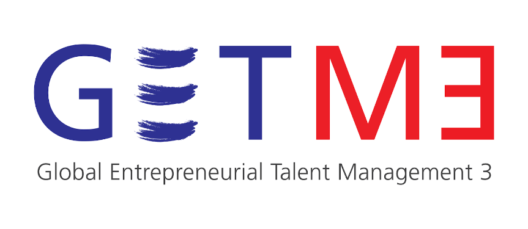

In ten years time, so-called 'millennials', the generation born between 1980 and 2000 will make up 75% of the world's workforce. As a generation, they have characteristics and motivations that differ significantly from earlier generations. They form the most educated, entrepreneurial and skilled workforce in history, yet employers complain that they lack long-term commitment and have unrealistic expectations of their careers. Millennials, on the other hand, feel that they are wasted in traditional roles with insufficient learning and development opportunities and place huge importance on work-life balance. Young talent management is therefore a major challenge for employers, multinationals and SMEs alike. Higher Education Institutions are caught in the middle, trying to bridge the gap.
DIT is part of an international consortium, led by Northumbria University and bringing together 13 academic and industry partners in Europe and South Korea, investigating current issues in the employability and management of graduates at a regional, national and global level with a view to improving employability and future global talent management to enhance business performance and support economic development. The Global Entrepreneurial Talent Management 3 (GETM3) project aims to create a broader understanding of entrepreneurial learning by identifying and addressing the talent management issues of the future for students and graduates, employers, and higher education institutions.
